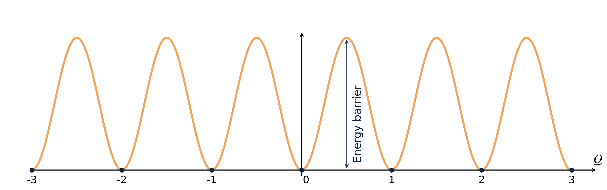
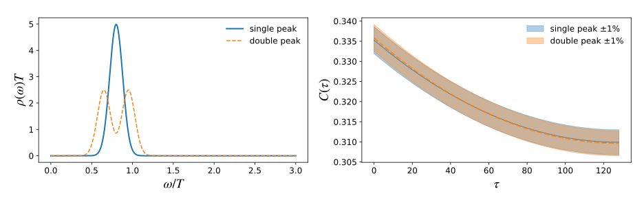
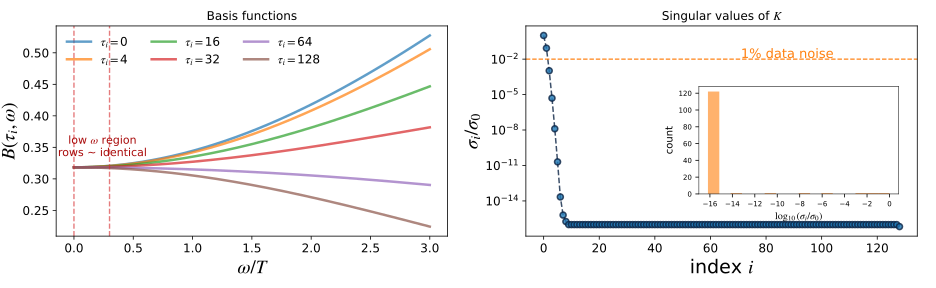
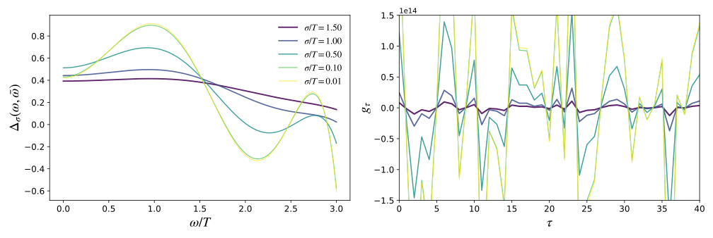
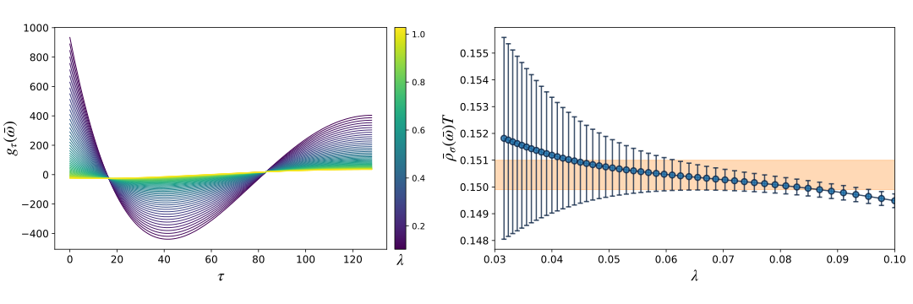
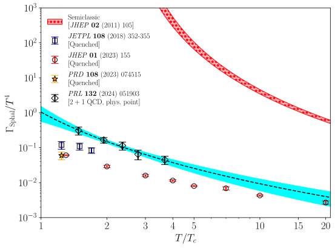
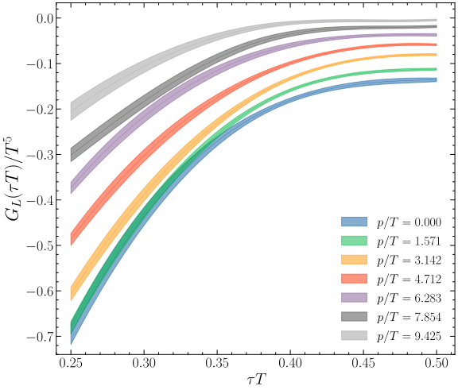
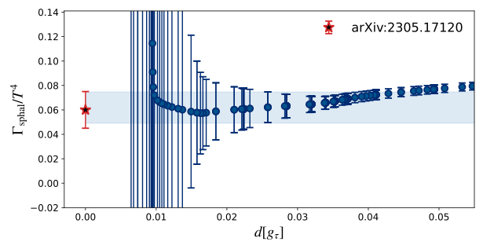
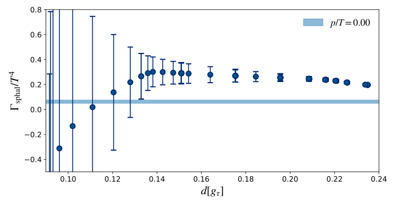

The QCD Sphaleron Rate
A First-Principles Determination from Inverse-Problem Techniques
Multi-canonical methods and Lattice Field Theory
November 27, 2025
Outline
-
Physics motivation
- What are sphaleron transitions? Why do we care?
-
The inverse problem
- From Euclidean Correlators to Spectral functions
- Ill-posedness
-
Mock data tests
- Instabilities & Regularization
-
Algorithmic strategy
- Modified Backus–Gilbert (HLT)
-
Lattice QCD calculation
- Finite \(\vec{p}~\) Correlators & Double Extrapolation
- Final results & outlook

QCD Topology
Full QCD Euclidean action:
\[S_{\text{QCD}} = \int d^4x~ \frac{1}{2g^2} \mathrm{Tr} \left[G_{\mu\nu}(x) G_{\mu\nu}(x)\right] + \int d^4x~\sum_f \bar{\psi}_f(x) (\gamma_\mu D_\mu + m_f)\psi_f(x) \;+\; \theta Q \]
QCD Topology
Full QCD Euclidean action:
\[S_{\text{QCD}} = \int d^4x~ \frac{1}{2g^2} \mathrm{Tr} \left[G_{\mu\nu}(x) G_{\mu\nu}(x)\right] + \int d^4x~\sum_f \bar{\psi}_f(x) (\gamma_\mu D_\mu + m_f)\psi_f(x) \;+\; \textcolor{#EB811B}{\theta Q} \]
The θ-term couples to the topological charge:
\[ Q = \frac{1}{32\pi^2} \int d^4x~ \varepsilon_{\mu\nu\rho\sigma} \, \text{Tr}[G_{\mu\nu} G_{\rho\sigma}] \]
- In the continuum: $ Q $ in \(\mathbb{Z}\)
- Each integer labels a distinct topological sector
Topological sectors are separated by energy barriers
transitions between vacua are rare but physically important
Why QCD topology matters
- Different \(Q\)-sectors correspond to distinct vacua with non-trivial topological structure

Why QCD topology matters
- Different \(Q\)-sectors correspond to distinct vacua with non-trivial topological structure
- Topology underlies key QCD phenomena:
- Witten–Veneziano mechanism → \(m_{\eta'~}\)
- Strong-CP problem (\(\theta\)-term)
- Topological susceptibility in QCD thermodynamics
.
Understanding QCD topology is essential
for hadron physics and finite-temperature QCD.
The QCD Sphaleron Rate
σφαλερός (sphalerós)
- slippery, likely to make one stumble
- ready to fall
Sphaleron Rate:
Rate of real time thermal transitions above sphaleron barriers separating topologically-inequivalent QCD vacua
The QCD Sphaleron Rate
σφαλερός (sphalerós)
- slippery, likely to make one stumble
- ready to fall
Sphaleron Rate:
Rate of real time thermal transitions above sphaleron barriers separating topologically-inequivalent QCD vacua
The QCD Sphaleron Rate
σφαλερός (sphalerós)
- slippery, likely to make one stumble
- ready to fall
Sphaleron Rate:
Rate of real time thermal transitions above sphaleron barriers separating topologically-inequivalent QCD vacua

The QCD Sphaleron Rate
Sphaleron Rate:
Rate of real time thermal transitions above sphaleron barriers separating topologically-inequivalent QCD vacua
\[ \Gamma_{\mathrm{sphal}} \equiv \int dt d^3x ~\langle q(\vec{x},t) q(\vec{0},0)\rangle _T \]
\[ \langle \mathcal{O} \rangle _T = \frac{1}{\mathrm{Tr}\{ e^{-\mathcal{H}/T} \}} \mathrm{Tr}\{e^{- \mathcal{H}/T} \mathcal{O}\} \]
Why do we care?
1) Chiral Magnetic Effect
Early stage of the Universe (\(\small 10^{-6}\mathrm{s}\)) → Quark-Gluon plasma
Spin ↑
↓ Momentum
Spin ↑
↑ Momentum
-
Helicity/Chirality in the \(\small m_q \to 0\)
\[\small \hat{h} = \frac{\vec{s} \cdot \vec{p}}{|\vec{p}|} \] -
Left-Handed (\(L\)):
Spin is anti-parallel to momentum. \[ \hat{h}\psi_L = -1\psi_L \] -
Right-Handed (\(R\)):
Spin is parallel to momentum. \[ \hat{h}\psi_R = +1\psi_R \]
Sphaleron transitions can change topology,
generating an axial charge density \(N_5\).
1) Chiral Magnetic Effect
Early stage of the Universe (\(\small 10^{-6}\mathrm{s}\)) → Quark-Gluon plasma
- At \(T \gg T_c\) (\({\sim}155\) MeV)→ Deconfinement
- QCD interactions are vector-like
preserve CP globally at \(\small \theta=0\)
\[\underbrace{\langle N_L-N_R }_{\color{#EB811B}\large N_5}\rangle=0\]
- But topology can induce local imbalance:
via Atiyah-Singer Index Theorem
1) Chiral Magnetic Effect
Sphaleron Transition occurs! (\(N_R \to N_L\))
Finite Sphaleron Rate (\(\Gamma_{\text{sphal}} \neq 0\))
↓
Barrier Crossing:
Thermal fluctuations overcome the energy barrier separating distinct topological vacua.
The Anomaly:
Transitions change \(Q\), driving axial charge via: \[ \partial_\mu j^\mu_5 = 2N_f \underbrace{\frac{g^2}{32\pi^2} G_{\mu\nu}\tilde{G}^{\mu\nu}}_{q(x)} \]
Result:
Creation of local Chiral Imbalance:
\[\Delta Q \neq 0 \Rightarrow \Delta N_5 \neq 0 \Rightarrow \mathrm{e.g.}~~ N_L > N_R \]
1) Chiral Magnetic Effect
Magnetic Field \(\vec{B}\) + Imbalance \(\to\) Electric Current \(\vec{J}\)
- \(\vec{B}\) aligns all spins (\(\downarrow\))
- Left-handed: \(\vec{p}\parallel -\vec{s}\) → move Down
- Right-handed: \(\vec{p}\parallel \vec{s}\) → move Up
Net motion is dominated (e.g.) by Left-handed fermions
A chiral imbalance (\(\small N_5 \neq 0\)) together with \(\vec{B}\) produces a CME current opposite to \(\vec{B}\):
\[ \vec{J}_{\text{CME}} \propto N_5 \,\vec{B} \]
Intense ongoing experimental efforts to detect
CME currents at heavy-ion colliders RHIC and LHC
2) Axion Cosmology & Sphalerons
The Axion:
A pseudo-Goldstone boson proposed to solve the Strong CP Problem and also a leading Dark Matter candidate.
Thermal Production:
Early Universe (\(\small T \sim T_c \div 10 T_c\)) → axions produced via hadronic scatterings: \[\small \pi + \pi \to a + a \]
The axion relic abundance is governed by the Boltzmann Equation [cite: 81-82]: \[ \small \frac{df_{\vec{p}}}{dt} = (1+f_{\vec{p}})\Gamma_{a}^{(+)} - f_{\vec{p}}\Gamma_{a}^{(-)} \]
The Key Input: The interaction rates \(\Gamma_a\) are realted to the Sphaleron Rate[cite: 84]:
\[ \small \Gamma_a^{(-)}=e^{E/T}\; \Gamma_a^{(+)}=\frac{\Gamma_{\text{sphal}}}{2 E f_a^2} \]
From Real Time to Euclidean Time
The Sphaleron Rate is a Real-Time Transport Coefficient: \[ \Gamma_{\text{sphal}} = \int dt\, d^3x~ \langle q(\vec{x}, t)\, q(\vec{0}, 0)\rangle_T \]
But lattice simulations live in Euclidean time (\(t \to -i\tau\)): \[ 0 \le \tau \le 1/T \]
We measure the Euclidean Correlator (spatially integrated): \[ G_E(\tau) = \int d^3x \, \langle q(\vec{x}, \tau)\, q(\vec{0}, 0)\rangle \]
The Challenge:
How to recover dynamic transport \(\Gamma_{\mathrm{sphal}}\) from lattice data \(G_E(\tau)\)?
Spectral Representation
Spectral Decomposition of Euclidean Correlators
\[ G(\tau) = -\int_0^\infty \frac{d\omega}{\pi}~ K(\tau,\omega)\,\rho(\omega) \]
Spectral Representation
Spectral Decomposition of Euclidean Correlators
\[ G(\tau) = -\int_0^\infty \frac{d\omega}{\pi}~ K(\tau,\omega)\, {\color{#EB811B}\rho(\omega)} \]
Spectral Representation
Spectral Decomposition of Euclidean Correlators
\[ G(\tau) =- \int_0^\infty \frac{d\omega}{\pi}~ { K(\tau,\omega)}\,{\color{#EB811B}\rho(\omega)} \]
with the thermal Laplace basis
\[\small K(\tau,\omega)= \frac{\cosh\!\left(\omega(\tau-\tfrac{1}{2T})\right)} {\sinh\!\left(\tfrac{\omega}{2T}\right)} \]
The spectral function encodes:
- excitations at finite \(\omega\)
- transport from its behaviour at \(\small \omega \to 0\)
- For the Sphaleron Rate: []
\[\small \Gamma_{\text{sphal}}=\lim_{\omega\to 0}\frac{2T}{\omega}\,\rho(\omega)\]
The Inverse Problem: A Mathematical Wall
The Inverse Problem: A Mathematical Wall
\[ G_E({\color{ #EB811B}\tau_i}) =- \int_0^\infty \frac{d\omega}{\pi} \, K({\color{ #EB811B}\tau_i}, \omega) \, \rho(\omega) \]
Input from the Lattice:
- Finite set of points: \(N_\tau \sim \mathcal{O}(10-20)\)
- Noisy data: \(G_E(\tau_i) \pm \sigma_i\)
The Unknown (Physics):
- Continuous function \(\rho(\omega) = \mathcal{L}^{-1}\{G_E\}(\omega)\)
- Infinite degrees of freedom
The Problem:
This is a Fredholm Integral Equation of the 1st Kind ⇒ Ill-Posed.
An infinite number of solutions \(\rho(\omega)\) can fit the discrete data within error bars.
Discretization & Mock Tests
Synthetic Data ⇒ \(G(\tau _i) = \sum _j K(\tau _i, \omega _j) \rho (\omega _j)\)
 
Direct Inversion: a Catastrophe!
Naive inversion: \({\rho} \sim K^{-1}\, G\)
To overcome ill-posedness, we must abandon pointwise reconstruction.
We instead target a smeared spectral density using a regularized estimator that suppresses noise amplification.
Breaking the Wall: 1.Smearing
Sharp features \(\rho(\omega)\) cannot be reconstructed → Smeared Spectral Density:
\[ \frac{\bar{\rho}_\sigma(\bar{\omega})}{\bar \omega} = \int_0^\infty d\omega \, \Delta_\sigma(\bar{\omega}, \omega) \, \frac{\rho(\omega)}{\omega} \]
Here \(\Delta_\sigma\) is a target smearing kernel which replaces the ideal \(\delta(\omega-\bar\omega)\) that we cannot resolve.
The HLT Strategy:
Rather than solving directly for \(\rho(\omega)\), we determine coefficients \(g_\tau(\bar\omega)\) such that \[
\Delta_\sigma(\bar{\omega},\omega)
\approx
\sum_{\tau=t_{\mathrm{min}}}^{N_\tau/2} g_\tau(\bar{\omega}) \, K(\tau, \omega).
\]
Then the smeared estimator becomes:
\[ \boxed{ \;\bar{\rho}_\sigma(\bar{\omega}) \;\approx\; \sum_{\tau=t_{\mathrm{min}}}^{N_\tau/2} g_\tau(\bar{\omega})\, G_E(\tau) } \]
Smearing Mock Test
The Trade-off:
- Narrower target \(\sigma\) \(\Rightarrow\) sharper \(\Delta\) but \(\|g\| \uparrow\) explodes.
- Broader \(\sigma\) \(\Rightarrow\) stable \(\Delta\), reduced variance, but poorer resolution.
- Goal: Need optimal \(\sigma\) + damping (\(\lambda\) reg.) to balance width vs. noise.

We now introduce regularization (Modified Backus–Gilbert / HLT) to set \(\sigma\) and suppress unstable modes.
the HLT functional
We determine the coefficients \(g_\tau(\bar\omega)\) by minimizing the functional:
\[W_\lambda[g] = (1-\lambda) A[g] + \lambda B[g]\]
- Resolution Error (Bias)
\[A[g] = \int_{0}^\infty d\omega \, \left[ \Delta(\omega) - \delta_\sigma(\omega) \right]^2 e^{2\omega}\]
- Penalizes deviations from the target \(\delta_\sigma\).
- Enforces the correct “smearing shape.”
- Statistical Error (Variance)
\[B[g] = \mathbf{g}^T \cdot \mathbf{Cov} \cdot \mathbf{g}\]
- Penalizes the variance of the estimator due to data noise.
- Reduces explosion of coefficients \(g_\tau\).
The parameter \(\lambda \in [0, 1)\) controls the trade-off.
(Unlike standard Backus-Gilbert, we fix \(\sigma\) as an input and scan \(\lambda\) for stability.)
The last Mock test

- Small \(\lambda\) → unstable:
Coefficients explode to minimize bias ↔︎\(A\). - Large \(\lambda\) → stable:
Coefficients are damped to minimize variance ↔︎\(B\).
- Small \(\lambda\):
Statistical error explodes (noise amplification). - Large \(\lambda\):
Systematic error dominates (poor resolution).
The Sweet Spot:
We pick the result on the plateau where the value stabilizes
before the noise takes over.
The HLT Algorithm: A Recipe
Input: Euclidean Correlator \(G_E(\tau)\) with covariance matrix.
-
Choose a Target Resolution \(\sigma\):
\[\small \left(\frac{2}{\sigma \pi}\right) \frac{\omega}{\sinh(\omega/\sigma)} \xrightarrow{\sigma \to 0} \delta(\omega) \]
Fix the physical width of the desired smearing \(\delta_\sigma(\omega)\): -
Scan the Regularization \(\lambda\):
Minimize \(W_\lambda[g]\) for \(\lambda \in [0, 1)\): \[ W_\lambda[g] = (1-\lambda) {A[g]} + \lambda B[g]\] -
Identify the Stability Plateau:
Plot \(\Gamma_\lambda\) vs. \(d=\sqrt{A[g({\color{#EB811B}\lambda})]/A[0]}\) and find the region where systematics and statistics equilibrate. -
Repeat for multiple \(\sigma\):
Eventually extrapolate \(\sigma \to 0\)
Lattice Calculation: Extracting the Signal
To measure topological fluctuations, we must suppress UV noise.
The Observable: \[ G_L(\tau) = \sum_{\vec{x}} \langle q_L(\vec{x}, \tau) q_L(\vec{0}, 0) \rangle \]
- The Problem:
Standard lattice topological charge is dominated by UV fluctuations \(\mathcal{O}(1/a)\) - The Solution:
Smooth Gauge links (e.g. via Gradient Flow or Cooling).
Smoothing reveals the topological signal but distorts short distances.
Artifacts:
Smoothing introduces a new scale \(R_s \propto \sqrt{n_{\text{cool}}}\).
We must remove this dependence to recover physical results.
Baseline: Zero-Momentum Results
Recent determination in full \(N_f = 2+1\) QCD at physical point.

Key Findings:
Determined for \(T \in [200, 600]\;\mathrm{MeV}\)
Unquenching effect:
Full QCD rate is larger than pure gauge.Scaling:
Fit to semiclassical-inspired ansatz: \[ \frac{\Gamma_{\mathrm{sphal}}}{T^4} = \left [\frac{A_0}{\log(T^2/T_c^2)+A_1} \right]^C \]QGP electric conductivity: \(\Gamma \sim T^2\)
\[ \text{Axion abundance}\Leftrightarrow \Gamma(E,p) = \int dt d^3x \; e^{ip_\mu x^\mu} \langle q(\vec{x},t) q(\vec{0},0) \rangle \]
New Frontier: Finite Momentum \(\Gamma(p)\)
We extend the calculation to non-zero spatial momentum \(\vec{p}\).
The Observable
Spatial Fourier Transform: \[ Q_L^{\vec{p}}(n_t) = \sum_{\vec{n}} e^{i\vec{p}\cdot\vec{n}} q_L(n_t, \vec{n}) \]
We compute the correlator: \[ G^{\vec{p}}(\tau) = \langle Q_L^{\vec{p}}(\tau) Q_L^{-\vec{p}}(0) \rangle \]- Essential for Axion thermal production rates.
- Probes the spatial structure of topological fluctuations.
- Pure SU(3) Gauge Theory
- \(T \simeq 1.24 \, T_c\)
- \(AR=4\) with \(N_t \in [12,14,16]\)
- Rigorous Double Extrapolation.
Removing Artifacts: Double Extrapolation
We perform a precise chain of limits to isolate the physical signal.

This procedure is repeated for every momentum \(\vec{p}\).
Results: Momentum Suppression
The physical, double-extrapolated correlators \(G^{\vec{p}}(\tau)\).

Observation:
- Strong suppression of the topological fluctuations as \(p/T\) increases.
- For \(p/T \sim 9\), the signal is suppressed by \(\sim 30\%\).
Physical Implication:
One might expect the transport rate \(\Gamma(p)\) to simply follow this suppression.
But does it?
Inversion Result
Applying HLT inversion to the double-extrapolated correlators.

Performing the inversion of double-extrapolated correlator gives the same estimate of a double-extrapolated Sphaleron Rate:
\[ \Gamma_\mathrm{sphal}^{\color{#EB811B}\mathrm{new}}= \qquad \mathrm{vs} \qquad \Gamma_\mathrm{sphal}= \]
Extension at finite \(p\)
HLT inversion example at \(p/T = 3.14\) and fixed \(\sigma/T \simeq 1.75\)

Extension at finite \(p\)
Full HLT reconstruction of \(\Gamma(p)\) from the double-extrapolated correlators:
Key Finding:
Contrary to the correlator suppression, the rate grows at low momentum (\(p \lesssim \pi T\)) and then saturates to a plateau.
Extension at finite \(p\)
Comparison with determinations at finite \(a\) and \(R_s \sim \sqrt{n_\mathrm{cool}}\)
Conclusions
- The Inverse Problem:
- Spectral reconstruction is ill-posed, but the HLT (Backus-Gilbert) strategy allows for a controlled determination of smeared spectral densities via stability analysis.
- Static Sphaleron Rate:
- We performed a non-perturbative determination in Full QCD \(N_f = 2+1\) varying the temperature in the range \(T \in [200, 600]\) MeV.
- The results are consistent with a scaling law \(\Gamma_{\text{sphal}} \sim T^2\).
- Finite Momentum (Novel Result):
- First systematic study of the momentum dependence in the pure gauge sector.
- Unexpected Behavior: While correlators are suppressed, the physical rate \(\Gamma (p)\) increases from the static limit before reaching a plateau.
- This provides a non-trivial input for Axion Boltzmann equations.
Future Perspectives: High-\(T\) & Charm
To constrain Axion cosmology, we must push to \(T \sim 1 \div 5\) GeV.
1. The Algorithmic Frontier
- Challenge:
High \(T\) requires fine lattices
\(a \lesssim 0.02\;\mathrm{fm}\) \(\to\) Topological Freezing. - Solution:
PTBC (Parallel Tempering on Boundary Conditions) + Multi-canonical algorithms. - Goal:
Tunnel between topological sectors to restore ergodicity.
2. The Physics Upgrade
- Requirement:
At \(T \gtrsim 1\) GeV, the Charm quark becomes dynamical. - Work in Progress:
Production of \(N_f = 2+1+1\) ensembles with Staggered Fermions. - Novelty:
Line of Constant Physics via Screening Masses.
This combined algorithmic and physical setup will allow us to match the Lattice determination
with Perturbation Theory in the Early Universe regime.
Thank you for your attention!